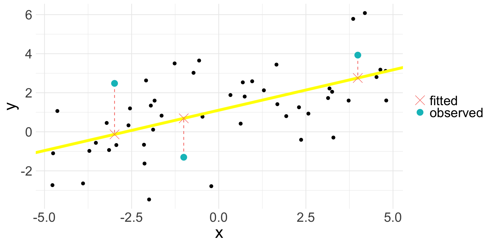
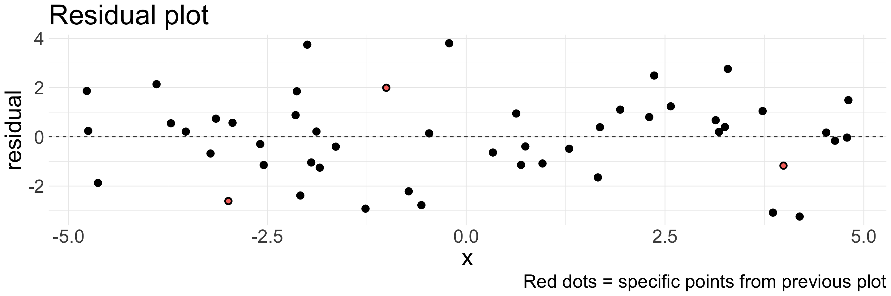
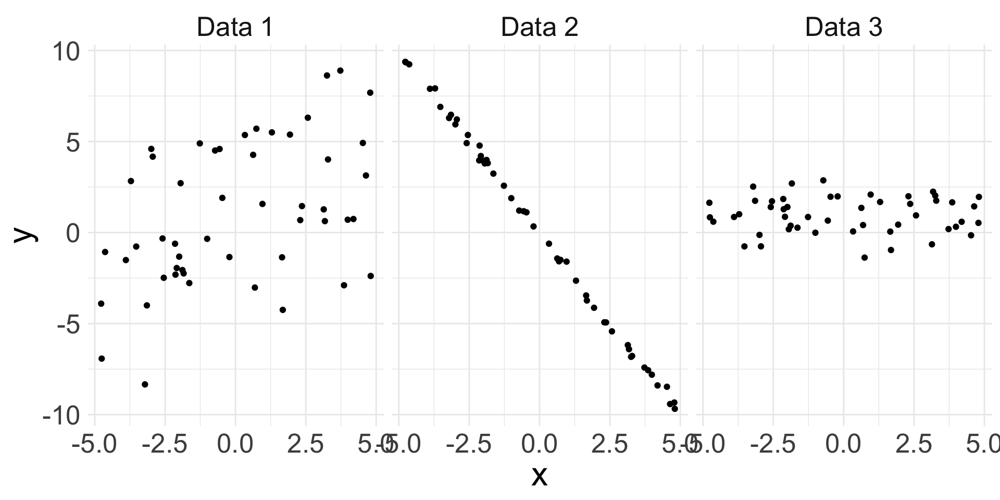

Introduction to Simple Linear Regression
Housekeeping
Homework 7 due tonight!
Last problem set is assigned today! Atypical due date: Wednesday 11/13
Linear regression
Crash course; take STAT 211 for more depth!
Fitting a line to data
Hopefully we are all familiar with the equation of a line: \(y = mx + b\)
Intercept \(b\) and slope \(m\) determine specific line
This function is deterministic: as long as we know \(x\), we know value of \(y\) exactly
Linear regression: statistical method where the relationship between variable \(x\) and variable \(y\) is modeled as a line + error:
\[ y = \underbrace{\beta_{0} + \beta_{1} x}_{\text{line}} + \underbrace{\epsilon}_{\text{error}} \]
Linear regression model
\[ y = \beta_{0} + \beta_{1} x + \epsilon \]
We have two variables:
- \(y\) is response variable. Must be continuous numerical.
- \(x\) is explanatory variable, also called the predictor variable
- Can be numerical or categorical
\(\beta_{0}\) and \(\beta_{1}\) are the model parameters (intercept and slope)
- Estimated using the data, with point estimates \(b_{0}\) and \(b_{1}\)
\(\epsilon\) (epsilon) represents the error
Accounts for variability: we do not expect all data to fall perfectly on the line!
Sometimes we drop the \(\epsilon\) term for convenience
Linear relationship
Suppose we have the following data:
- Observations won’t fall exactly on a line, but do fall around a straight line, so maybe a linear relationship makes sense!
Fitted values
Suppose we have some specific estimates \(b_0\) and \(b_{1}\). We could fit the linear relationship using these values as:
\[ \hat{y} = b_{0} + b_{1} x \]
The hat on \(y\) signifies that this is an estimate: the estimated/fitted value of \(y\) given these specific values of \(x\), \(b_{0}\) and \(b_{1}\)
- We observe \(y\), but can obtain a corresponding estimate \(\hat{y}\)
Note that the fitted value is obtained without the error
Fitted values (cont.)

- Suppose our estimated line is the yellow one
- Every observed value \(y_{i}\) has a corresponding fitted value \(\hat{y}_{i}\); the above plot just shows three specific examples
Residual
Residuals are the remaining variation in the data after fitting a model.
\[ \text{data} = \text{fit} + \text{residual} \]
- For each observation \(i\), we obtain residual \(e_{i}\) via:
\[y_{i} = \hat{y}_{i} + e_{i} \quad \Rightarrow \quad e_{i} = \hat{y}_{i} - y_{i}\]
Residual = difference between observed and expected
Since each observation has a fitted value, each observation has a residual
In the linear regression case, the residual is indicated by the vertical dashed line
What is the ideal value for a residual?
Residual (cont.)

Residual values for the three highlighted observations:
| x | y | y_hat | residual |
|---|---|---|---|
| -2.991 | 2.481 | -0.130 | -2.611 |
| -1.005 | -1.302 | 0.691 | 1.994 |
| 3.990 | 3.929 | 2.757 | -1.172 |
Residual plot
Residuals are very helpful in evaluating how well a model fits a set of data
Residual plot: original \(x\) values plotted against their corresponding residuals on \(y\)-axis

Residual plot (cont.)
Residual plots can be useful for identifying characteristics/patterns that remain in the data even after fitting a model.
Just because you fit a model to data, does not mean the model is a good fit!

Can you identify any patterns remaining in the residuals?
- Sorry! The residuals shown here are taken as \(y_{i} - \hat{y}_{i}\)!
Describing linear relationships
Different data may exhibit different strength of linear relationships:

- Can we quantify the strength of the linear relationship?
Correlation
Correlation is describes the strength of a linear relationship between two variables
- The observed sample correlation is denoted by \(R\)
- Formula (not important): \(R = \frac{1}{n-1} \sum_{i=1}^{n} \left(\frac{x_{i} - \bar{x}}{s_x} \right)\left(\frac{y_{i} - \bar{y}}{s_y} \right)\)
Always takes a value between -1 and 1
-1 = perfectly linear and negative
1 = perfectly linear and positive
0 = no linear relationship
Nonlinear trends, even when strong, sometimes produce correlations that do not reflect the strength of the relationship

Least squares regression
In Algebra class, there exists a single (intercept, slope) pair because the \((x,y)\) points had no error; all points landed on the line.
Now, we assume there is error
How do we choose a single “best” \((b_{0}, b_{1})\) pair?
Different lines
The following display the same set of 50 observations.
Which line would you say fits the data the best?
There are infinitely many choices of \((b_{0}, b_{1})\) that could be used to create a line
We want the BEST choice (i.e. the one that gives us the “line of best fit”)
How to define “best”?
Line of best fit
One way to define a “best” is to choose the specific values of \((b_{0}, b_{1})\) that minimize the total residuals across all \(n\) data points. Results in following possible criterion:
- Least absolute criterion: minimize sum of residual magnitudes:
\[ |e_{1} | + |e_{2}| + \ldots + |e_{n}| \]
- Least squares criterion: minimize sum of squared residuals:
\[ e_{1}^2 + e_{2}^2 +\ldots + e_{n}^2 \]
The choice of \((b_{0}, b_{1})\) that satisfy least squares criterion yields the least squares line, and will be our criterion for “best”
On previous slide, yellow line is the least squares line, whereas pink line is the least absolute line
Linear regression model
Remember, our linear regression model is:
\[ y = \beta_{0} + \beta_{1}x + \epsilon \]
While not wrong, it can be good practice to be specific about an observation \(i\):
\[ y_{i} = \beta_{0} + \beta_{1} x_{i} + \epsilon_{i}, \qquad i = 1,\ldots, n \]
Here, we are stating that each observation \(i\) has a specific:
- explanatory variable value \(x_{i}\)
- response variable value \(y_{i}\)
- error/randomness \(\epsilon_{i}\)
Conditions for the least squares line (LINE)
Like when using CLT, we should check some conditions before saying a linear regression model is appropriate!
Assume for now that \(x\) is continuous numerical.
Linearity: data should show a linear trend between \(x\) and \(y\)
Independence: the observations \(i\) are independent of each other
e.g. random sample
Non-example: time-series data
Normality/nearly normal residuals: the residuals should appear approximately Normal
- Possible violations: outliers, influential points (more on this later)
Equal variability: variability of points around the least squares line remains roughly constant
Running example
We will see how to check for these four LINE conditions using the cherry data from openintro.
| diam | volume |
|---|---|
| 8.3 | 10.3 |
| 8.6 | 10.3 |
| 8.8 | 10.2 |
| 10.5 | 16.4 |
| 10.7 | 18.8 |
Explanatory variable \(x\):
diamResponse variable \(y\):
volume
1. Linearity
Assess before fitting the linear regression model by making a scatterplot of \(x\) vs. \(y\):
Does there appear to be a linear relationship between diameter and volume?
- I would say yes
2. Independence
Assess before fitting the linear regression model by understanding how your data were sampled.
- The
cherrydata do not explicitly say that the trees were randomly sampled, but it might be a reasonable assumption
An example where independence is violated:
Here, the data are a time series, where observation at time point \(i\) depends on the observation at time \(i-1\).
- Successive/consecutive observations are highly correlated
Fitting the model
At this point, it is time to actually fit our model
\[ \text{volume} = \beta_{0} + \beta_{1} \text{diameter} +\epsilon \]
- After fitting the model, we get the following estimates: \(b_{0}= -36.94\) and \(b_{1} = 5.07\). So our fitted model is:
\[ \widehat{\text{volume}} = -36.94 + 5.07 \times \text{diameter} \]
Remember: the “hat” denotes an estimated/fitted value!
We will soon see how \(b_{0}\) and \(b_{1}\) are calculated and how to interpret them
The next two checks can only occur after fitting the model.
3. Nearly normal residuals
Assess after fitting the model by obtaining residuals and making a histogram.
- Remember, residuals are \(\hat{y}_{i} - y_{i}\)
cherry |>
mutate(volume_hat = -36.94 + 5.07*diam) |>
mutate(residual = volume_hat - volume) | diam | volume | volume_hat | residual |
|---|---|---|---|
| 8.3 | 10.3 | 5.108 | -5.192 |
| 8.6 | 10.3 | 6.628 | -3.672 |
| 8.8 | 10.2 | 7.641 | -2.559 |
| 10.5 | 16.4 | 16.253 | -0.147 |
| 10.7 | 18.8 | 17.266 | -1.534 |
Do the residuals appear approximately Normal?
- I think so!
4. Equal variance
Assess after fitting the model by examining a residual plot and looking for patterns.
A good residual plot:
A bad residual plot:
We usually have a horizontal line at 0 to compare residuals to
4. Equal variance (cont.)
Let’s examine the residual plot of our fitted model for the cherry data:
Based on this plot, I would say there is a definite pattern in the residuals and equal variance condition is not perfectly met.
- Some of the variability in the errors appear related to
diameter
- Some of the variability in the errors appear related to